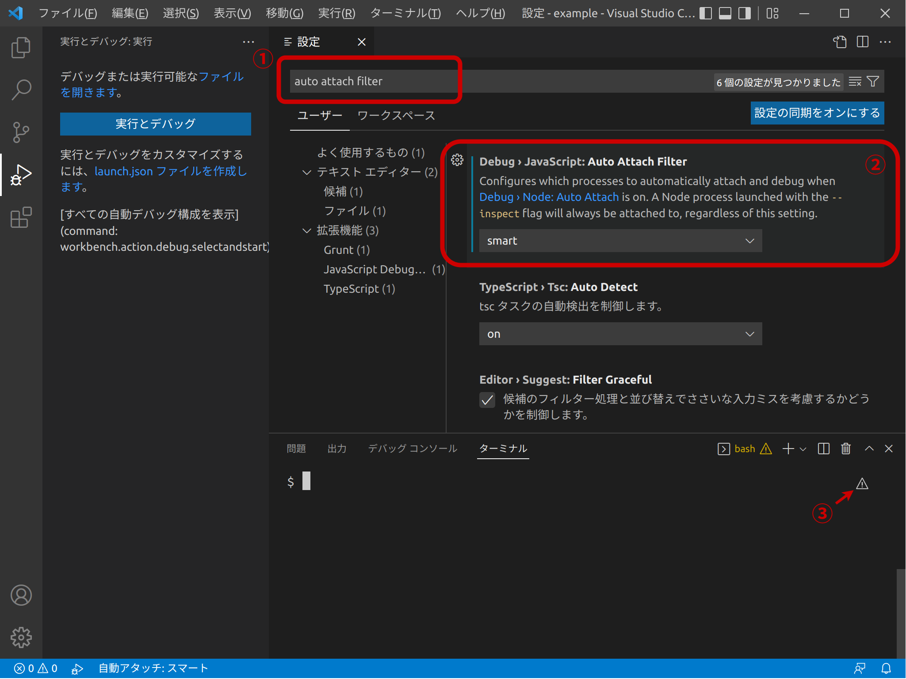
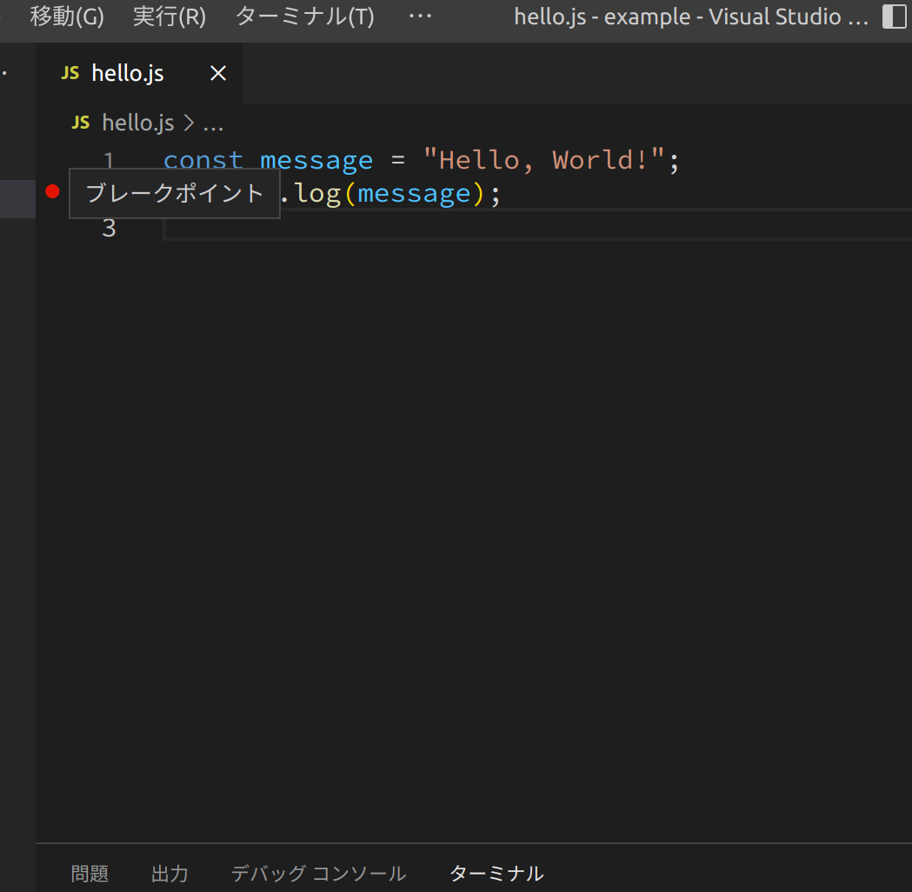
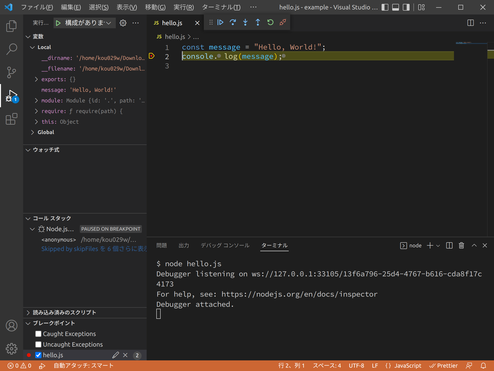

VSCodeでのNode.jsのデバッグ
VSCodeは標準でNode.jsのプログラムのデバッグを行うことができます。
VSCodeでNode.jsのプログラムのデバッグを行うには、Auto Attach (自動アタッチ)を使用します。 設定を変更し、Node.jsで起動したプログラムにアタッチして、デバッグを開始します。
デバッグを行えるようにすることで、ブレークポイントを指定して処理の流れを確認したり、そのときの変数の内容を確認したりすることができます。
自動アタッチ設定
設定から、Debug › JavaScript: Auto Attach Filter (debug.javascript.autoAttachFilter) を変更します (1)。
smart を選択すると、VSCodeターミナルからNode.jsのプロセスを実行したとき--inspectスイッチが有効化され、自動的にデバッグを開始することができます (2)。
自動アタッチを行うにはVSCode内のターミナルを使用しなければなりません。 また、Auto Attachを有効にした後、ターミナルを一度再起動する必要があります。これは、ターミナルの右上にある ⚠ アイコンをクリックするか、新しいターミナルを作成することで行えます (3)。

自動アタッチの設定
ブレークポイント
Node.jsで実行するプログラムのコードをVSCodeで開き、行番号の左の部分をクリックしてブレークポイントを作成できます。 また、もう一度その部分をクリックすることでそのブレークポイントを削除できます。

ブレークポイントの作成
あるいは、画面上からクリックする代わりに、コードのブレークポイントを置きたい場所に debugger 文を追加することでブレークポイントを作成します。いずれの方法でもブレークポイントを作成できます。
参考文献: debugger - JavaScript | MDN
ブレークポイントを作成後、VSCode内のターミナルから実行するとそのブレークポイントでNode.jsの処理は一時停止します。
ターミナル:
$ node hello.js

Node.jsのデバッグ
上部に表示されているボタンの意味を説明します。
続行

プログラムの実行を続けます。プログラムが終了するか次にブレークポイントが現れるまで実行し続けます。
ステップオーバー

ステップオーバー、ステップイン、ステップアウトはステップ実行のための機能です。
ステップオーバーは、プログラムを1行進めます。
ステップイン

ステップインは、もしその行に関数の呼び出しがあれば、その関数の最初の行に移動します。
ステップアウト

ステップアウトは、もしその行が関数の中であれば、その関数の呼び出し元の次の行に移動します。
参考文献: Debugging in Visual Studio Code
このようにして、VSCodeでNode.jsのプログラムのデバッグを行うことができます。